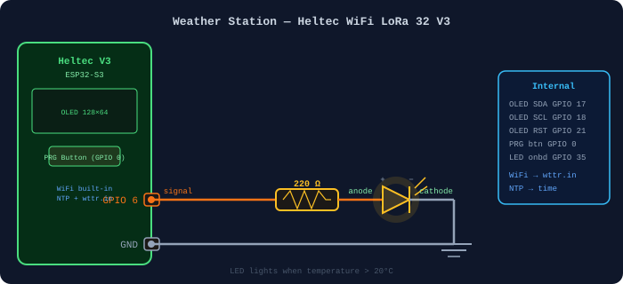

For this week I built a WiFi weather station on the Heltec WiFi LoRa 32 V3 (ESP32-S3). It pulls live weather from wttr.in and syncs the local time via NTP, showing both on the built-in OLED display. Pressing the onboard PRG button toggles between Cambridge, MA and Bucharest, Romania — the two cities I care about the most!
On boot the board connects to WiFi, syncs UTC from pool.ntp.org, applies the
correct POSIX timezone, then fetches weather from wttr.in as JSON. ArduinoJson extracts
temperature (°C and °F), humidity, and the weather description. The display redraws every
second so the clock stays live; weather refreshes automatically every 5 minutes. The built-in
LED pulses white during each fetch. No delay() in loop() — all
timing via millis().
The PRG button (GPIO 0, active LOW, 300 ms debounced) cycles the city, swaps the POSIX timezone string so the clock immediately reflects local time there, and fires a fresh weather fetch.
One external white LED and a 220Ω resistor wired to GPIO 6. Everything else is built into the Heltec V3.

Libraries: Adafruit SSD1306, Adafruit GFX, ArduinoJson v7 — all via Library Manager. Fill in WiFi credentials before flashing.
// Week 4 — Weather + Time Display — Heltec WiFi LoRa 32 V3
// White LED on GPIO 6 lights up when temp > 10°C.
#include <WiFi.h>
#include <HTTPClient.h>
#include <WiFiClientSecure.h>
#include <ArduinoJson.h>
#include <Wire.h>
#include <Adafruit_GFX.h>
#include <Adafruit_SSD1306.h>
#include <time.h>
const char* WIFI_SSID = "MAKERSPACE";
const char* WIFI_PASS = "12345678";
struct City { const char* label; const char* wttr; const char* tz; };
const City CITIES[] = {
{ "Cambridge MA", "Cambridge+MA+USA", "EST5EDT,M3.2.0,M11.1.0" },
{ "Bucharest RO", "Bucharest+Romania", "EET-2EEDT,M3.5.0/3,M10.5.0/4" }
};
int cityIdx = 0;
static const uint8_t BUTTON_PIN = 0; // PRG button, active LOW
static const uint8_t LED_ONBOARD = 35; // pulses white during fetch
static const uint8_t LED_EXT = 6; // blue LED: GPIO6 → 220Ω → LED(+) → LED(-) → GND
Adafruit_SSD1306 display(128, 64, &Wire, 21);
struct Weather { int tempC, tempF, humidity; char desc[22]; bool valid; };
Weather wx = {};
unsigned long lastFetch = 0, lastDraw = 0, lastBtnTime = 0;
bool prevBtn = HIGH;
void applyTimezone() { setenv("TZ", CITIES[cityIdx].tz, 1); tzset(); }
void updateTempLED() {
digitalWrite(LED_EXT, wx.valid && wx.tempC > 10 ? HIGH : LOW);
}
void fetchWeather() {
if (WiFi.status() != WL_CONNECTED) return;
ledcWrite(LED_ONBOARD, 80);
WiFiClientSecure client; client.setInsecure();
HTTPClient http;
http.begin(client, String("https://wttr.in/") + CITIES[cityIdx].wttr + "?format=j1");
http.setTimeout(12000);
http.addHeader("User-Agent", "curl/7.68.0"); // required — wttr.in blocks default UA
if (http.GET() == 200) {
String body = http.getString(); // getString() more reliable than streaming on ESP32
JsonDocument doc;
if (!deserializeJson(doc, body)) {
auto cc = doc["current_condition"][0];
wx.tempC = cc["temp_C"].as<int>();
wx.tempF = cc["temp_F"].as<int>();
wx.humidity = cc["humidity"].as<int>();
const char* d = cc["weatherDesc"][0]["value"];
strncpy(wx.desc, d ? d : "---", 21); wx.desc[21] = '\0';
wx.valid = true;
updateTempLED();
}
}
http.end(); ledcWrite(LED_ONBOARD, 0); lastFetch = millis();
}
void drawDisplay() {
struct tm t; bool gotTime = getLocalTime(&t, 100);
display.clearDisplay(); display.setTextColor(SSD1306_WHITE);
display.setTextSize(1);
display.setCursor(0, 0); display.print(CITIES[cityIdx].label);
display.setCursor(0, 12);
if (wx.valid) { display.print(wx.tempC); display.print("C / ");
display.print(wx.tempF); display.print("F"); }
else display.print("Fetching...");
display.setCursor(0, 24); if (wx.valid) display.print(wx.desc);
display.setCursor(0, 36);
if (wx.valid) { display.print("Humidity: "); display.print(wx.humidity); display.print("%"); }
display.setTextSize(2); display.setCursor(0, 48);
if (gotTime) { char buf[6]; strftime(buf, sizeof(buf), "%H:%M", &t); display.print(buf); }
else display.print("--:--");
display.display();
}
void setup() {
Serial.begin(115200);
Wire.begin(17, 18);
display.begin(SSD1306_SWITCHCAPVCC, 0x3C);
display.clearDisplay(); display.setTextColor(SSD1306_WHITE);
display.setTextSize(1); display.setCursor(0, 0);
display.println("Connecting WiFi..."); display.display();
ledcAttach(LED_ONBOARD, 5000, 8);
pinMode(BUTTON_PIN, INPUT_PULLUP);
pinMode(LED_EXT, OUTPUT);
// Self-test blink so you can verify wiring before WiFi connects
for (int i = 0; i < 3; i++) {
digitalWrite(LED_EXT, HIGH); delay(200);
digitalWrite(LED_EXT, LOW); delay(200);
}
WiFi.begin(WIFI_SSID, WIFI_PASS);
unsigned long t0 = millis();
while (WiFi.status() != WL_CONNECTED && millis() - t0 < 15000) delay(300);
if (WiFi.status() == WL_CONNECTED) {
configTime(0, 0, "pool.ntp.org"); applyTimezone();
display.clearDisplay(); display.setCursor(0, 0);
display.println("Getting weather..."); display.display();
fetchWeather();
} else {
display.clearDisplay(); display.setCursor(0, 0);
display.println("WiFi failed."); display.display();
}
}
void loop() {
unsigned long now = millis();
bool btn = digitalRead(BUTTON_PIN);
if (btn == LOW && prevBtn == HIGH && (now - lastBtnTime > 300)) {
lastBtnTime = now;
cityIdx = (cityIdx + 1) % 2;
applyTimezone(); wx.valid = false;
updateTempLED(); drawDisplay(); fetchWeather();
}
prevBtn = btn;
if (now - lastFetch >= 300000UL) fetchWeather();
if (now - lastDraw >= 1000UL) { lastDraw = now; drawDisplay(); }
}